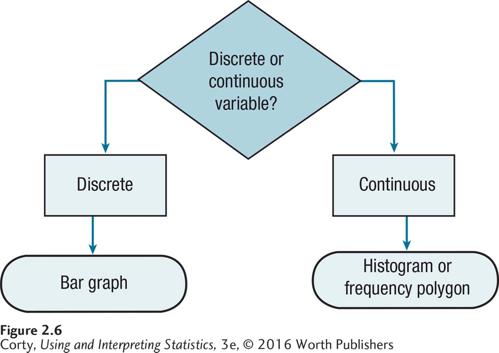

Figure 2.16: Figure 2.6 How to Choose: What Graph Should One Make for a Frequency Distribution? Start by using Figure 2.4 to determine whether the variable is continuous or discrete. The type of graph depends on this decision. No matter which graph one makes, be sure to give the graph a title and label all axes. If the variable being graphed is measured at the ordinal, interval, or ratio level, one can comment on the shape of the graph.